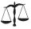
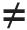
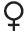

There are fourteen categories in the SAB, with the corresponding icons and number of marked passage shown below. No attempt has been made to rate the occurrences, since what seems trivial to one person may seem important to another.
Still there are some things we can all agree on. No one doubts, for example, that 1 Samuel 15.3, Ezekiel 23.20, and Leviticus 19.18 are cruel, filthy, and good, respectively.
But many other passages are not nearly so clear. Some will think a verse is important and should be included; others that it is trivial and should be left out.
Although I would like make the SAB as comprehensive as possible, I can’t include everything. So I apply this test when deciding what to include or leave out: How would an objective reader view the passage? Would she view it as cruel, absurd, intolerant, etc.—or good? If so, I mark it accordingly. If not, I leave it out. (And when in doubt, I leave it out.)
There is a lot of overlap between the categories, so often a passage that is marked cruel will be marked unjust and intolerant as well. Take 1 Samuel 18:25-27, for example, where David buys his first wife with 200 Philistine foreskins. That passage is marked with absurdity, cruelty, sex, misogyny, family values, injustice, and contradiction icons. And I probably could have thrown in language and science and history, as well.
I’ve marked passages as I see them. On some you may agree, on others you may disagree. This is as it should be. Read each passage and decide what you think about it. That is the whole point of the SAB.
Absurdity (2178)
I’ve labeled things absurd either because they seem absurd (ridiculous or unreasonable) or because they are just plain funny.
For example, the story about Samson and the 300 foxes in Judges 15.4 is absurd (and funny), while the whole town asking Jesus to leave in Matthew 8.34 after he killed 2000 pigs is just plain funny.
Sometimes, I admit, I get a bit carried away with this. When Paul, for example, talked about “refreshing his bowels in the Lord” in his letter to Philemon, he probably didn’t mean it the way it sounds in the King James Version. But I mark it anyway, because I like the way it sounds.
 Injustice (1541)
Bible-believers like to claim that we all get our morality and sense of justice from the Bible. But we don’t. None of us do.
No one believes that it is just to punish children for what their parents did, that parents should be willing to kill their children for God, or that children should be executed for disobeying their parents, to name just a few examples. And yet these are considered moral imperatives in the Bible.
In the SAB, I highlight the verses that make us all cringe today, and make us all glad that we don’t actually get our morals and sense of justice from the Bible.
Cruelty and Violence (1316)
If I had to pick a single reason for rejecting the Bible, it would be its cruelty.
It’s not the cruelty per se that bothers me; it’s the biblical god’s role in the cruel acts. The God of the Bible ordered Saul to kill “man and woman, infant and suckling, ox and sheep, camel and ass” in 1 Samuel 15.3. And the Bible contains hundreds of other cruel acts of God, any one of which, if true, would be enough for me to reject the Bible and its vicious God.
I also object to the pointless violence in the Bible, even when God doesn’t seem to be directly involved. Judges 19, for example, is one of the most disgusting stories in all literature. If God was trying to communicate something in this chapter, I’d rather not know what it was.
Intolerance (701)
If there’s a point to the Bible and to religion in general it is this: God likes some people and religious beliefs more than others.
In the Hebrew Scriptures, the Jews are his favorite people, and he despises everyone else. Even so, he only likes certain Jews. Witches, homosexuals, disobedient children, and Sabbath breakers are to be executed.
And it’s even worse in the New Testament. People with the “wrong” religious beliefs are not just killed; they are tortured forever after they die for their supposedly mistaken beliefs.
Good Stuff (507)
But isn’t there some good stuff in the Bible?
Well yes there is, although surprisingly little for such a big book. Indeed, if the bad, boring, and useless passages were removed from the Bible and only the good retained, the bible would be nothing more than a small pamphlet.
But Bible-believers are unwilling to edit the Bible. So the good verses, when not invalidated by their immediate context, are contradicted elsewhere in the Bible. There is not a single good idea in the entire Bible that is taught consistently throughout. Consequently, it is worse than useless as a moral, philosophical, political, or scientific guide.
Still, I think it is important to point out the good stuff in the Bible, and so I have highlighted the good verses and provided a “thumbs up” icon to mark them in the text.
 Contradictions (462)
Contradictions seem to be the only things that believers are concerned about. God can tell Jehu to collect 70 heads in two baskets, and believers are okay with that, since the Bible is consistent on that topic. But did God kill 23,000 or 24,000 for committing whoredom with the daughters of Moab? Now that’s a real problem to a believer. Not that God would kill so many people for so silly a reason. Who cares about that? No, it’s the number that’s important, because the Bible must not disagree with itself.
I’ve never seen a contradiction that believers can’t resolve, at least to their own satisfaction. It could have been this way, it could have been that. That’s what it says, but that’s not what it means. It was a copyist’s error. Whatever.
Contradictions are, in my opinion, the least of the Bible’s problems. I include them for just one purpose: it shows that the Bible, whatever else it may be, is not inerrant.
How do I define inerrant? Well, I’d say something is inerrant if it has no errors.
I should tell you, though, that I don’t believe there are any inerrant books, although many come very close. My old Physical Chemistry book, for example. Written by Peter Atkins and published in 1982, that book and I spent a lot of time together when I was taking P-Chem. And though I loved the book and know of no errors in it, I don’t think it’s inerrant. I’ll bet there are a few spelling or grammatical errors and maybe a typo or two. And in its 1000+ pages there is probably an important mistake in an equation somewhere—maybe an exponent left off, a decimal misplaced, or something. And since it’s been 30 years, it could use some revising to get it caught up with recent advances in Chemistry. And, of course, as with any book, there are probably some errors in structure, presentation, and style.
But if you want to call Atkins’ book inerrant, I won’t argue about it. And I promise not to write a Skeptic’s Annotated P Chem book or anything like that. But if I did, I wouldn’t have anything to highlight and nothing to say. Atkins need not worry about my snide remarks.
There are a lot of books that come close to inerrancy, but the Bible is not one of them. And its errors are not confined to missing exponents or poor choice of words. Of all the books that I know of, the Bible is the most errant. It is by far the worst book I’ve ever read (with the possible exceptions of the Quran and the Book of Mormon). I know of no other book, for example, that commands you to kill homosexuals, Sabbath breakers, nonbelievers, rape victims who don’t cry out loud enough, relatives if they believe differently than you, etc. These are serious errors; they should be taken seriously, especially since two billion people believe the Bible to be the inerrant word God.
Although contradictions are included in the book version of the SAB (see the list in the appendix), they more thoroughly treated at the SAB website (SkepticsAnnotatedBible.com), with separate pages and cross links for each of the contradictions.
Conflicts with Science and History (428)
Religious moderates and secular accomodationists claim that there is no conflict between science and religion. And although that might be true of some religions (Buddhism and deism perhaps), it is not true for any that are based upon the Bible. Because the Bible makes many statements about science and history that we now know are false.
Biblical fundamentalists know there is a conflict between science and religion. They solve this conflict by rejecting science whenever it conflicts with the Bible, which it does whenever the Bible says anything about science or history.
Biblical Family Values (413)
The religious right loves to talk about biblical family values. So I’ve included this category to show just what those values entail. When should a father stone to death his whole family? What should be done with a non-virgin bride on her wedding night? What did Jesus have to say about hating our families? It’s all highlighted in the SAB.
Interpretation (403)
Mark Twain said, “It ain’t the parts of the Bible that I can’t understand that bother me, it is the parts that I do understand.” And he was right about that. Most of the Bible is clear enough to anyone who takes the time to read it. And yet it’s surprising how many passages, whose meaning seems clear enough to a nonbeliever, are interpreted completely differently by the various groups of believers.
Take John 6.53-66, for example. Catholics will tell you that Jesus meant what he said about eating his body and drinking his blood. Protestants disagree, saying that’s just too darned gross, even for Jesus. It’s a matter of interpretation, I guess.
So to point out a particular interpretation I’ll highlight the passage using the interpretation icon.
 Misogyny and Insults to Women (384)
The Bible has plenty to say about women, and nearly all of it is insulting. When should you cut off a woman’s hand, without pity? When may a woman teach or speak in church? What should you do with a wife that no longer pleases you? What to do with a menstruating woman? How to find out if your wife has been unfaithful? How are women saved? It’s all there in all of its misogynistic glory.
Sex (253)
I don’t want to give you the wrong impression here. I have nothing against sex. It is included as a highlighted category for the following reason: Bible-believers often complain about sex in library books, television, movies, and art museums. These complaints, when successful, result in censorship. Christians should realize, however, that if any book is removed from the library because of its sexual content, then the Bible should also be removed.
I do object, though, to the Bible’s sexual ethics. For example, in Genesis 19, Lot (who is called just and righteous in 2 Peter 2.7-8) gets drunk and impregnates his two virgin daughters. There is no indication that God disapproved of Lot’s behavior.
Some of the material in the Bible is filthy by any standard. Yet Ezekiel 23.20 is part of the “pure word of God”. (Psalm 12.6, 119.140; Proverbs 30.5)
False Prophecy and Misquotes (231)
The authors of the New Testament searched the Hebrew Scriptures to find passages that they could claim were prophecies about Jesus. Pretty much anything would do. But when a passage didn’t quite fit (and none of them did), they had two options: alter the scripture to fit the story about Jesus, or alter the story about Jesus to fit the scripture.
Believers still justify their belief by pointing to the passages from the Hebrew Scriptures that supposedly point to Jesus. And I highlight such passages and point out which of the two options they use.
Language (186)
According to Proverbs 30.5, “Every word of God is pure.” If so, then there’s a lot in the Bible that isn’t the word of God. Try reading 2 Kings 18.27, Ezekiel 23.20, or Malachi 2.3, for example.
I tried to apply the Proverbs 30.5 rule in the SAB by highlighting verses that just don’t seem pure enough to be included in the pure “word of God.”
Homosexuality (25)
Considering the amount of attention this gets from the religious right, you’d think the Bible had a lot to say about homosexuality. It doesn’t. There are fewer passages in this category than in any other in the SAB.
Still, contrary to the religious left, the Bible, in the few verses that address it, is clear enough about it: homosexuality is an abomination, and the punishment for it is death.